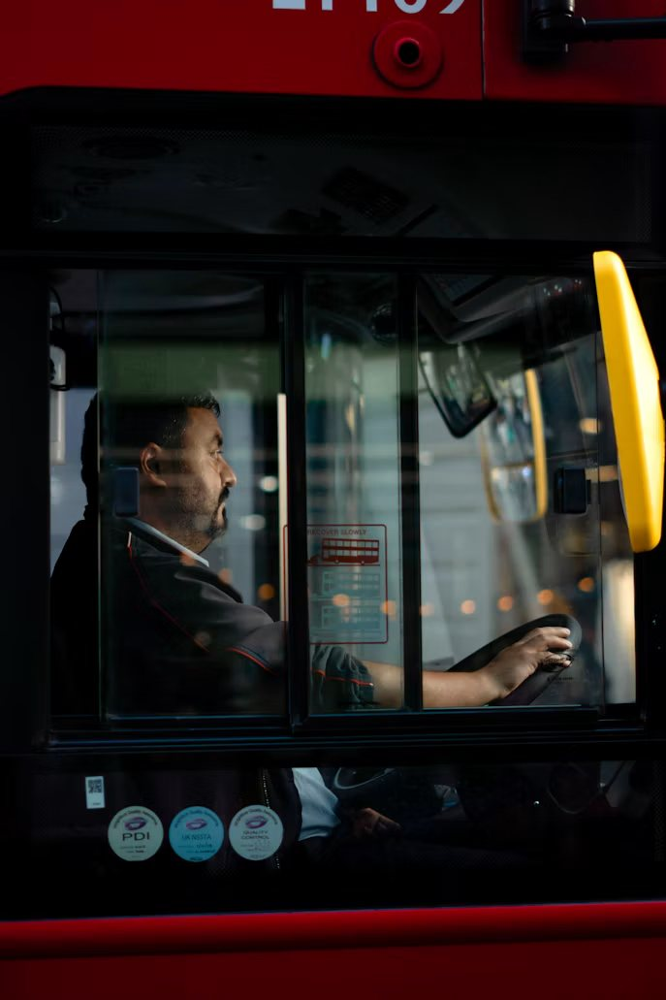

Forsiden / Norge
Kategori
9 saker
Norge
Gode nyheter fra hele landet — fra byene til de minste bygdene.
Norge
Rekordmange søker lærlingplass i grønne fag
Skolene melder om fulle klasser i fornybarfag.

Små gleder
Naboene malte alle trappene i gata
Det startet med én bøtte maling. Nå har hele gata fått farger.

Norge
Bussjåføren som kan navnet på alle passasjerene
Tjue år på samme rute — og han kjenner alle som går på.
Norge
Bygda som fikk butikken tilbake
Da kjeden la ned, startet innbyggerne sin egen.
Kultur
Biblioteket som låner ut verktøy og symaskiner
Nå kan du låne en drill like lett som en bok.
Sport
Lokalklubben som gir bort treningsutstyr
Ingen skal slutte fordi skoene blir for små.
Verdensrommet
Nordlyssesongen blir en av de beste på år
Slik øker du sjansen for å se det.
Dyr og natur
Havørna hekker i Oslofjorden igjen
For første gang på flere tiår er det observert et hekkende par.
Vitenskap
Norsk lab fant ny måte å lagre varme på
Kan gjøre sommerens solvarme nyttig om vinteren.